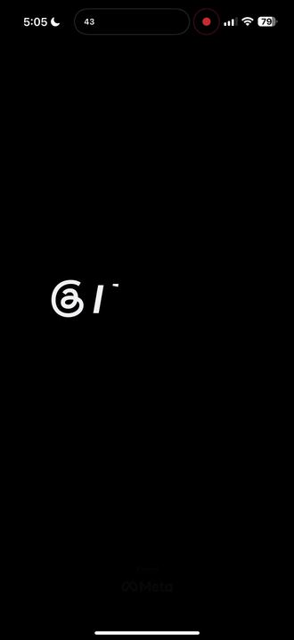
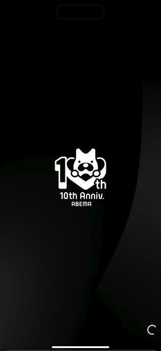
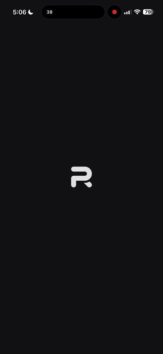
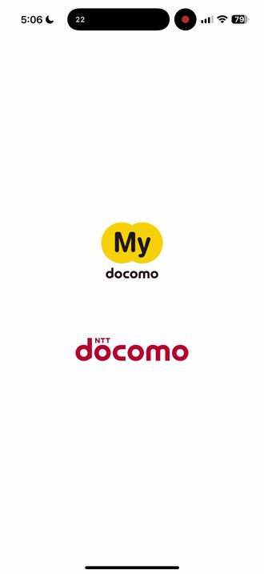
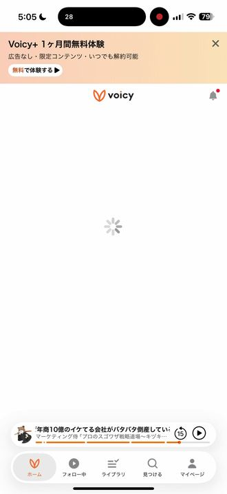
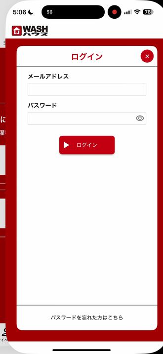
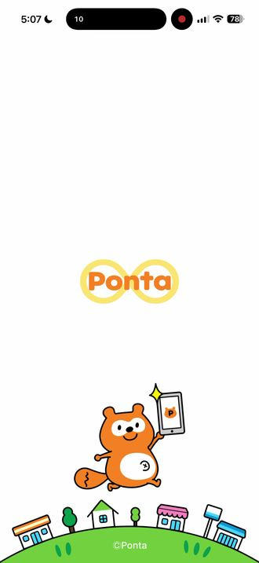
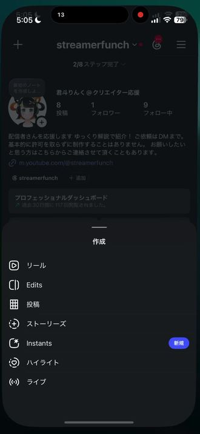

起動画面は公式の標準どおりに作り、
アプリは自分で「けんこう診断」する
調子が悪いときは原因を見つけ、公開前には問題がないか確認し、これまでの判断を次回へ引き継ぎます。
専門知識がなくても全体像が分かるように、実例から順に説明します。
調子が悪いときは原因を見つけ、公開前には問題がないか確認し、これまでの判断を次回へ引き継ぎます。
専門知識がなくても全体像が分かるように、実例から順に説明します。
このキットで作るアプリには「体調メモ」の仕組みが入ります。
アプリが自分の調子（何件処理した・何秒かかった・どこで失敗した）を
数字でメモしてくれるので、不具合のときあなたが状況を説明しなくても、
AIがそのメモを読んで原因を特定し、修正まで進められます。
このキットで作ったアプリでなくても使えます。
既にある JS/TS プロジェクトのフォルダを指定するだけで、そのまま走ります（実測: 無関係の3リポジトリに当てて、それぞれ実際の問題を検出しました）。
| チェック | 見つけること |
|---|---|
check-tracked-imports |
新しく作ったファイルをgit addし忘れたまま使っている箇所。ローカルではディスクにあるので動いてしまうが、git clone直後（CI/Vercel）だけ「解決できません」と失敗する |
check-lockfile-sync |
package.jsonに足したパッケージがpackage-lock.jsonに反映されていない（npm install後のコミット忘れ） |
check-secrets-not-tracked |
.envや秘密鍵ファイルが、意図せずgitに追跡（コミット）されてしまっている |
check-large-tracked-files |
ビルド成果物や動画など、サイズの大きいファイルの誤コミット（リポジトリ肥大化の原因） |
check-selftest-coverage |
★検査そのものが「サボると赤くなるか」を確かめていないもの。検査は在るのに壊れても緑を返す状態を数えます（増えたときだけ赤）。 |
check-symptom-index |
★症状の言葉で過去の原因を引けないもの。症状IDが原因索引に登録されていない数を数えます（症状の仕組みがまだ無ければ skip し、入れ方を案内します）。 |
check-cross-checked |
★1つの手段だけで断定していないか。「別の手段でも確かめた」とコミットに書かれた回数を数えます。★間違えた回数ではなく、確かめた回数を数えるので、正直に訂正を書くほど不利になることがありません（減ったときだけ赤）。 |
check-timing-instrumented |
★「遅い」と言われる経路に、時間を測る計器が無いもの。件数だけの計器では「何msかかったか」が分からず、遅さの報告に答えられません。実損として、計器の無い経路を推測で3回直そうとして3回とも外しました（増えたときだけ赤）。 |
check-instruments-reachable |
★計器が「あるのに動かない」もの。分岐の片側でしか作られない値を計器が参照していると、例外に飲まれて1件も記録されません。計器が無いなら「無い」と分かりますが、あるのに動かないと「0件だから正常」と読み違えます（実際にそう報告してしまった事故から作りました）。 |
check-heartbeat-present |
★製品が「異常なし」を自分で名乗れないもの。症状が出たときだけ書くログでは、「何も起きなかった」と「計器そのものが動いていなかった」が同じ見た目になります。一定間隔で1行だけ書く仕組み（心拍）が在るかを見ます（ログを書かない小さなツールは skip）。 |
check-docs-match-code |
★説明した置き場所と、コードが実際に探す場所のズレ。説明はコードより先に腐るので、人の記憶に頼らず機械で突き合わせます。 |
check-silent-hang-guard |
★コンソールが無い場所で「固まって返ってこない」形。PowerShell は進捗バーを描こうとしますが、描く先が無いと待ち続けます。1KB のファイルでも固まるので「重いから遅い」と誤診しがちです（実測: 既定＝返ってこない／抑止あり＝402ms）。CI や自動化から呼ぶスクリプトで効きます。 |
check-hotkey-scope |
★AutoHotkey製の常駐アプリで、キーボードを奪ったまま返さないホットキー。前面判定（WinActive）を持たない条件で登録されたキーは、常駐ウィンドウが閉じきれずに残ったときメモ帳でもブラウザでもそのキーを奪います（実際に「スペースキーを打っても変換されない」という実害が同じ日に2回発生）。他アプリのキー入力に手を出さないマウス専用ホットキーは対象外です。.ahkが無いプロジェクトは skip（対象外・合格ではない）。 |
check-build-fresh |
★直したはずなのに直っていない形。配る実体（exe / app / apk 等）がソースより古いままになっていないかを見ます。実際に、キーボードを奪う不具合を直したのに同じ日に2回目が発生しました——コードは直っていたのに、製品が常駐したまま exe を掴んでいてビルドが無言で失敗し、古い実体が残って起動されていたためです。ソース側の検査（ハッシュ一致・構文）は全部緑だったので、この区間だけが無防備でした。多段ビルド（src → 中間生成物 → 実体）の中間も見ます。成果物を作らないプロジェクトは skip（対象外・合格ではない）。 |
check-gates-are-wired |
★検査を作ったのに、誰もそれを呼んでいない状態。呼ばれない検査は、存在しない検査と同じです。実際に、アプリの審査却下を捕まえるための検査が登録されておらず、検出役が動かないまま却下を通したことがあります。別の場所へ格上げしただけでは配線になりません——移した先で呼ばれているかまでを数えます。 |
check-shared-parts-used |
★共有部品があるのに使わず、同じ名前の関数を自前で書いている数。重複の代償は行数ではなく、一度直したはずのバグが別の画面では直っていないことです（共有部品に入った修正が、その部品を読み込まない画面には永久に届きません）。重複禁止はルールとして既に3箇所に書かれていましたが守られませんでした ——検査していない規範は守られないため、数える側に回しました。統合すべきかは判定しません（描画戦略の違いなど、分けている理由が正当なものも混ざります）。 |
check-decision-receipt |
★新規ファイルを作ったのに、既存を探して比べた記録（Decision Receipt）が無い状態を数えます。「共有部品があるのに使わない」を検知するcheck-shared-parts-usedとは別の問題——こちらはそもそも既存を探したかどうかを見ます。記録するのは REUSE / ESTABLISH_REHOME / CONTRACT / SYNC / KEEP_SEPARATE / LOCAL の6種類の判断のいずれかを選んだという客観的な事実だけで、その判断が正しかったかは判定しません（責務が本当に同じか等の判断は人・AIが行うものです）。 |
nodeが動く環境なら、
このリポジトリの外にあるどんなプログラムのフォルダに対してもそのまま実行できます。
追加インストールも不要（Node標準機能だけで動きます）。
アプリを開いた直後に出る画像を起動画面（スプラッシュ）と呼びます。 世の中のアプリの起動画面は、たいてい普通にきちんと出ています。 それは各社が自作しているからではなく、逆に公式の標準どおりに作っているからです。
Capacitor には公式のアセット生成ツール
@capacitor/assets
があり、assets/ に元の画像を置くだけで、iPhone・Android・Webの全サイズを自動生成します。
ダークモード用も splash-dark.png という決まった名前を置けば公式が対応します。
ここに自前の生成処理を書き足す必要はありません。
@capacitor/assets を動かした結果です。元の画像2枚から
26ファイル（通常13＋ダーク13）が自動生成されました。自分で書いたコードは0行です。
| 誰がやるか | 内容 |
|---|---|
| 人（1回だけ） | 元の画像（2732×2732）をデザインしてリポジトリに置く |
| 公式ツール | iPhone・Androidの全サイズへ展開／ダークモード対応 |
| このキット | 公式ツールが取りこぼす所だけを確認（下記3点） |
公式に任せても、次の3つだけは自動で埋まりません。ここだけをキットが確認します。
| 確認すること | 放置するとどうなるか |
|---|---|
| 元の画像があるか | 公式ツールは元画像が無いときエラーを出さず黙って飛ばすため、既定の画像のまま公開されます |
| 既定の画像のままでないか | ネイティブ側は毎回作り直されるので、初期状態の画像が毎ビルド復活します |
| 表示方法と背景色 | ここはプラグイン側の設定で公式ツールの管轄外。既定のままだとAndroidだけ縦に伸びます |
npm run splash:check★2026-08-24に方針を変えました。以前はこのキット自身が起動画面の画像を生成しており、 その自作部分が原因の不具合を、さらに自作の検査で見つける状態になっていました。 自作をやめて公式ツールに寄せ、約500行を削除しました。 残したのは上の3点だけです。
★この自動検査は設定と画像ファイルを確認します。端末ごとの色味や大きさの好みまでは判定できないため、 全部合格した後もiPhone・Android実機で最後に1回だけ目視します。
「きちんと出ている起動画面」がどういうものかを、実機の画面録画から取り出しました。 地色は画像から実際に測った値です（推測ではありません）。 並べてみると、有名アプリほどやっていることは少ないと分かります。








| 8本を並べて分かったこと | 設計への意味 |
|---|---|
| 地色は「暗い色」か「ほぼ白」だけ 実測は #000000 / #111113 / #171B1E / #FEFEFE の4種類だけだった |
凝った色やグラデーションは使われていません。ブランド色1色で十分です |
| 置くものはロゴ1つ。多くて社名か待ちの印 （Instagram だけロゴを出さない） |
キャッチコピー・説明文・ボタンは1本もありません。読ませる画面ではありません |
| ロゴを出す7本は、全て中央・大きすぎない | 端まで広げず、周囲に十分な余白を取ります |
| 1〜2秒で消える 録画8本はいずれも4〜7秒で、起動画面はその一部だけ |
長く見せる画面ではありません。「読み込み中です」と伝えるだけの役目です |
| ★Instagram だけ「ロゴを出さない」やり方 暗い地に、これから中身が入る場所を薄い箱で先に見せる（骨組み表示） |
ロゴを出すのが唯一の正解ではありません。すぐ本画面の形を見せて待たせないという別の考え方です。ただし実装は重く、ネイティブの起動画面だけでは作れません |
★やってはいけないことも、この8本が示しています。 文字を詰め込む・地色と画像の色を食い違わせる・ロゴを画面いっぱいに広げる—— どれも1本もやっていません。「地色1色＋中央にロゴ」から外れたら、まず疑ってください。
★画像は見本であり、著作権は各社に帰属します。 設計の参考として実機の見え方を記録したものです。真似すべきは構図と情報量であって、 ロゴやデザインそのものではありません。
このキットは1つの親フォルダの下に、プロジェクトを横に並べる形を前提にしています。 この形なら、検査は症状の定義も原因の索引も自分で見つけます（引数を渡す必要がありません）。
github/ ← 親フォルダ（名前は何でもよい）
├ ai-hub/ ← 原因の索引（index.json）★これが横に居ることが大事
├ web-ios-android/← このキット
├ your-app-a/ ← あなたのプロジェクト
└ your-app-b/探す場所は決め打ちしていません。下の順に見て、最初に見つかったものを使います。
| 探すもの | 見る場所（上から順に） |
|---|---|
| 症状の定義 | src/lib/symptomVerdicts.js → src/lib/symptoms.js → lib/symptomVerdicts.js |
| 原因の索引 | ../ai-hub/index.json → ai-hub/index.json → _docs/index.json |
別の場所に置きたいときは、場所を渡してください。
node templates/diagnostics/check-symptom-index.mjs \
--symptoms path/to/symptoms.js \
--index path/to/index.json★見つからなくても、勝手に「問題なし」にはしません。 症状の仕組みをまだ入れていなければ「まだありません（skip）」と入れ方を案内し、 症状はあるのに索引だけ見つからないときは 「測れませんでした」として区別します （＝入れたのに繋がっていない合図です）。
2026-08-23、このキット自身が自分の掟を破っていることが分かりました。
診断3本に selftest が1つも無く、--selftest を渡しても
引数が無視されて「skip」で終了コード0を返していました。
＝ 壊れていても緑に見える状態です。
3本に手で足すだけでは、次に4本目を作った人が忘れたら終わりです。
そこで check-selftest-coverage.mjs が
selftest を持たない検査の数を機械が数え、増えたときだけ赤くします。
いまの本数を上限として固定してあるので、減らすのは自由です。
★名前だけを見ません。コメントを除いた実コードで 引数を実際に読んでいるかまで確かめます （コメントに書いただけで通る穴を塞ぐため）。
症状が起きたとき、アプリは 症状ID（例 panel-black）を出します。
その言葉で過去の原因の索引を引ければ、次に同じ症状を見た人は
調べ直す往復が要りません。これが「共有するほど減る」の中身です。
ところが実測すると、症状ID 7件で索引を引いて ヒット率は 0% でした。索引には245件の登録があるのに、 症状の言葉と索引の言葉が別々だったためです。
check-symptom-index.mjs が
索引に無い症状の数を数えます。上の run.mjs を回せば一緒に走ります（症状定義と索引の場所は自動で探します）。原因が分かった症状を索引に足すと
緑になります（実演で 0% → 100% を確認済み）。
＝ 正しい方向にだけ報われる形にしてあります。
★「登録して」と頼む仕組みにはしません。頼む形（オプトイン）は このキットで3ヶ月で登録1件のまま死んだ実績があります。 ★この検査は索引の中身が正しいかは判定しません（正しさは人が確かめます）。
セキュリティ診断サービス（malwarecheck.siteなど）に自分のWebサイトを投げると、
セキュリティヘッダーの設定漏れや .env ファイルの公開放置などで
減点されることがあります。そこで、内部の先取り検査で直す場所を見つけ、
最後に malwarecheck.site 本体でも実測する2段階の検査にしています。
★外部サービスへ送るのは公開URLだけです。秘密情報やローカルファイルは送りません。 SQLi/XSSの実注入テストやポートスキャン、パスワードの総当たりも一切行いません。 100点は外部から見える簡易診断の満点であり、「絶対安全」を意味しないことも 検査結果に毎回明記されます。
スマホ・タブレット・PCなど画面サイズが違うだけで、横スクロールが出たり 文字が読めないほど小さくなったりすることがあります。崩れやすい書き方を コードのまま先に見つけ、最後に実際のブラウザで見た目を確認する 2段階の検査にしています。
★「実際にどう見えるか」の判定は自前で再実装しません。ブラウザのレイアウト 計算をコードで完全再現するのは車輪の再発明であり、必ずズレます。 静的解析は「固定px幅」「viewportタグの欠如」「メディアクエリの不在」といった 崩れやすい既知パターンの先取りゲートに留め、正式な判定は実ブラウザでの 実測（375px・768px・1024px・1440pxで実際に開いて横スクロール・見切れを確認） に委ねています。
前の章の4本はどんなプログラムにも使える汎用でした。ここからは
iOS/Androidアプリをストアに出すときだけ起きる事故を止めるゲートです。
いずれも「誰かが実際に踏んだ事故」から作られていて、想像で書いた項目は1つもありません。
（templates/scripts/ に全10本。うち下表の7本がストア提出専用、残りは前後の章で扱っています）
「気をつける」で終わらせず、機械が止めるところまでやる
| ゲート | 止める事故（出典） |
|---|---|
verify-ios-splash-not-default |
Capacitorの青いデフォルト起動画面がそのまま出荷される。 スプラッシュ用の元画像を置き忘れると生成がスキップされ、既定の画像のまま world に出る。 しかも生成ツールは旧ファイルを上書きせず別名で書くため、ファイル名のハッシュ比較では検出できない。 生成の「前」に既定画像のsha256を記録し、後で置き換わったかを直接照合する方式で解決している。 |
verify-android-splash-not-default |
上のAndroid版。cap add android が置くプレースホルダ画像がそのまま残る事故を、同じ直接証拠方式で止める。 |
check-splash-config |
Androidだけ起動画面が縦に伸びる。
引き伸ばし設定（androidScaleType）の既定値は「引き伸ばし」で、
正方形の素材を縦長端末に敷くと歪む。iOS側は中央を切り抜くので、
放置するとiOSとAndroidで見た目が食い違う。
あわせて、背景色が4箇所で食い違っていないか（＝起動直後に一瞬まっ白がチラつく条件）も見る。 |
check-splash-safe-circle |
起動画面に「色の付いた円」だけが出る。 Android 12以降は起動画面のアイコンを円形に切り抜くため、 背景を焼き込んだ不透過の画像を渡すと全面が塗られて円になる。 素材が透過か、絵柄が安全円の内側かを確かめる。 |
verify-android-signing-config |
未署名のAABができあがり、Play Consoleがアップロードを拒否する。
bubblewrapもCapacitorも build.gradle に署名設定を書いてくれないため、
何もしないと必ず未署名になる。ビルドの前に検査して、Playに弾かれる前に止める。 |
verify-signing-material-path |
「CIが鍵を置く場所」と「build.gradleが鍵を読む場所」がズレる。 パスは相対解決されるため、ズレていても署名設定の注入自体は成功してしまい、 最後のビルドで初めて失敗が発覚する。1階層目で検出する。 |
verify-webdir-consistency |
capacitor.config.ts の webDir と、CIが実際に成果物を作る場所の不一致。
空のアプリが出来上がる事故を防ぐ。 |
verify-manual-setup-done |
自動化できない手作業（ストアのアプリ枠作成など）が本当に終わったかを、APIで実在確認する。 「画面に手順を出すだけ」で終わらせず、終わったことを機械が確かめる。 |
lint-pre-submission |
提出前の総点検。過去に却下された観点をまとめて再検査する。 |
いちばん怖いのは失敗が赤くなることではなく、何も見ていないのに緑になることです。 テストが「該当なし」で全部スキップされていても、画面上は緑のチェックマークが並びます。 これを見逃すと「ゲートを通したから大丈夫」という確信だけが残り、事故はそのまま出荷されます。
check-instrument-ran が「その検査が本当に走ったか」を確かめます。
件数ゼロの緑・条件が合わず全スキップの緑を、合格として扱わせません。
gitリポジトリでない、package.json が無い——そういう「そもそも検査対象ではない」ものを
赤で止めると、赤が日常になり、誰も赤を見なくなります。
このキットは前提が無い場合を skip として扱い、
本物の赤だけが赤になるようにしてあります。
見ていないときは止まります。画面が隠れているあいだは測定を停止するので、 電池もCPUも食いません。「ずっと動く」と「ずっと重い」は別です。
読む間隔は「書く側の間隔」で決めます。 「1秒でも遅れたら困る」といった感覚で決めると、人によって答えが変わり、根拠が残りません。 データを書いている側が何秒ごとに更新するか——これだけが動かない事実なので、そこから決めます。
コピーには「いつの値か」を必ず入れます。 30秒前の数字を「今の状態」として読むと誤診になります。 判定も正常／注意／異常／まだ測れていないの4つに分け、 「測れていない」を「正常」に混ぜません。
症状の出ている画面では測らない。重い画面をさらに操作すると、測ること自体が症状を悪化させます。 別のブラウザ窓に出荷物だけを読ませて、そこで測ります。
必要なのは「実データ」ではなく「実規模」。 たとえば「参加者857人」で崩れるなら、857個ぶんの部品を合成すれば再現できます。 本物の配信を待つ必要はありません。
「効いているはずの対策」の実文を読む。 実例では「25個目から小さくする」という対策が入っていましたが、実際の指定を読むと 小さくするだけで、個数は1個も減らしていませんでした。思い込みはここで壊れます。
①「前の版」ではなく「今までで一番良かった版」と比べる。
直前の版とだけ比べると、1版ごとの悪化はほんの少しなので誰も気づけません。
1→2→3→4と少しずつ悪くなっても、隣同士だと「+1」にしか見えないからです。
このキットは常に「これまでで一番良かった記録」と比較するので、
じわじわ悪化して元の悪い状態に戻っても必ず気づけます。
| 版 | 測った数字 | くらべた相手 | 判定 |
|---|---|---|---|
| v1 | 2,400 KB（アプリの重さ） | ―（最初の記録） | 🟢 記録 |
| v2 | 1,360 KB | 過去最良 2,400 KB | 🟢 改善（1,040 KB 軽くなった） |
| v3 | 2,000 KB | 過去最良 1,360 KB | 🔴 悪化（出荷前に止まる） |
②「小さいほど良い」とは限らない。数字の向きは指標ごとに先に決めておく。
「軽い方がいい」「速い方がいい」は直感的ですが、すべての数字がそうとは限りません。
向きを間違えると、正しく直した人を「悪化させた」と誤判定して止めてしまうという
一番やってはいけない事故になります。
| 実際にあった数字の動き | 正しい判定 | もし「小さい方が良い」と決め打っていたら |
|---|---|---|
| エラー率 100% → 0% | 🟢 改善（エラーが消えた） | 🔴 誤って「退化」判定 |
| 描画の成功回数 2回 → 13回 | 🟢 改善（ちゃんと動くようになった） | 🔴 誤って「退化」判定 |
| 読み込み間隔 3秒 → 12秒 | 🟢 改善（取りこぼしがなくなった） | 🔴 誤って「退化」判定 |
だからこのキットは、数字が動いた「見た目」から良し悪しを推測しません。 指標ごとに「大きい方が良いか・小さい方が良いか」を先に人が決めて宣言してから、 その方向でだけ比較します。
この台帳は「間違った数字を書いたときだけ赤くなる」設計です。 「毎回書かないと赤くなる」ようにはしていません。書くこと自体を強制すると、 面倒なときにとりあえずの嘘の数字が入ってしまい、台帳の信頼が一度で崩れるためです。 記録を忘れた版は「悪化」ではなく「まだ測っていません」という別の扱いになり、 忘れたことに後から気づける形にしてあります。
台帳を作っても、手で書く数字は書き忘れた瞬間に死にます。 実例では、台帳を入れて8日後に調べたところ—— 10種類のうち自動で記録される2種類しか動いていませんでした。 その間に診断の所要時間は29.3秒→0.019秒と1,500倍も良くなっていたのに、 記録は1件も残っていませんでした。 つまり台帳は「改善している」と表示しながら、ほとんど何も測っていませんでした。
「測れている数 / 全体」を常に出します。 放置されている数字は名前と「何版前か」を添えて見せます。 ただし書くことは強制しません——強制すると、面倒なときに 「とりあえず埋める」で嘘の数字が入るからです。
動かなかったものは、何も言いません。 「無言だった」ことは、それ自身には分かりません（動いていないのだから）。 だから外側に記録を置き、必ず前へ進むもの（更新の履歴）と照らし合わせます。
検査がちゃんと通ったときにだけ印が残る形にしてあります。 赤で止まっていれば印は残らないので、放置するほど差が開き、やがて知らせが出ます。
知らせは「調べていません」であって「悪くなりました」ではありません。 ここを赤にすると、とりあえず印だけ付けて黙らせる動機を作ってしまうためです （台帳を無理に書かせると嘘の数字が入るのと、まったく同じ理由）。
Git追跡ファイルとGitが表示する未追跡ファイルを全件数え、Gitの全コミット件名、現在の変更、 指示書、設計・事故の記録、数字の進化台帳を1枚にします。 各項目には元のファイルと行番号・hashが付くため、AIが要約だけで断定せず原文へ戻れます。
confirmed（証拠があり次回も守る）、rejected（実測で却下し、
もう繰り返さない）、pending（まだ仮説）を混ぜません。
確定と却下は証拠が無いと台帳へ書けないので、推測がいつの間にか仕様になる事故を防ぎます。
.env、鍵、証明書、ローカル設定は存在だけを数え、本文もhashも読みません。
会話だけの判断・外部サービス・実機は自動取得できないため、取得していないものを
「把握済み」や「正常」に混ぜません。
node scripts/run-instruments.mjs --deep --report .instrument-report.json の1本で、全文脈パケット、汎用診断、
数字の進化台帳、計器が走ったか、各selftestを最後まで実行します。
途中が黄色や赤でも止まらず、最後に赤 ＞ 測れなかった ＞ 緑の順でまとめます。
https://<アプリ本体のドメイン>/check-shindan-version/ です。
たとえば soushin-suggest.link なら
/check-shindan-version/、app.reply-suggest.link でも
同じ /check-shindan-version/ が本体の一部として作られます。
soushin-suggest.link の本体LPを具体例にします。
導入後は、利用者が知りたい短い更新情報を本体LPへ、詳しい動作確認を /check-shindan-version/ へ、同じ情報から同時に反映します。
進み具合は、必要な確認がいくつ終わったかを表します。 現在の状態は、確認済み／確認中／問題あり／まだ未確認の4つです。 そのため「まだ確認していない」を問題なしにせず、何が残っているかと次にすることまで分かります。
index.html を生成します。
.env、トークン、鍵、絶対パス、診断の生ログは公開レポートへ入れません。
同じ期間に見つかった本物の不具合5件の内訳です。
・使っている本人の報告…3件（「反応が悪い」「クリックで入らない」）
・アプリ自身が書き出した記録…2件（一覧が真っ白になる症状。数字から原因が確定）
重いテストが見つけたものは、0件でした。
記録は症状が出たときに書かれます。すると、
・本当に何も起きなかった
・記録する仕組みそのものが動いていなかった
この2つがまったく同じ見た目（無言）になります。 実際にある製品では、起動直後の異常が記録の仕組みを一度も通らず、 ログに何も残らないことが確かめられています。
症状が無くても、一定間隔で1行だけ書く。それだけです。
こうすると最後の心拍から「いつ動かなくなったか」が分かり、
無言と正常をようやく区別できます。
これを見るのが check-heartbeat-present です。
いま実際に見ている数字は次の3つです。どれもこのリポジトリの中だけで数えられるものに 限っています（実機の速さのように、測るたび条件が変わる数字は自動では記録しません。 条件の違う数字を並べると、比べてはいけないものを比べることになるからです）。
| 見ている数字 | いまの値と、なぜ見るのか |
|---|---|
診断キットの検査本数 |
6本（多いほど良い）。以前、検査が1本も走っていないのに 「全チェック緑」と表示されていた時期がありました。本数が減れば、 配っている検査が静かに消えたということです。 |
自己検査を持たない配布物 |
8本（少ないほど良い）。わざと壊しても赤くならない検査は、 気づかないうちに全部を通してしまいます。これから減らしていく対象です。 |
自己検査を持たない診断 |
3本（少ないほど良い）。新しい検査に自己検査を付け忘れると ここが増えるので、その場で気づけます。 |